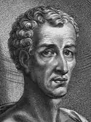
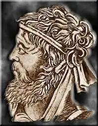

КАТУЛЛ, Гай Валерій (Catullus, Gaius Valerius — 87 чи 84 до н.е., Верона — бл. 54 до н.е., Рим) — римський поет, лірик-неотерик."Поети-неотерики", або "нові поети", як глузливо прозивав їх Ціцерон, утворили гурток римських поетів середини І ст. до н.е., куди входили представники молодої аристократії. Вони культивували переважно малі літературні форми (епіграму, елегію, епілій), свідомо протиставивши їх епосу та драмі. Взірцем для поетів-неотериків слугувала грецька поезія, головним чином александрійська поезія з кола Каллімаха. Вірші неотериків вирізнялися "вченістю" та довершеністю форми. Значення неотериків полягає у тому, що вони першими з римлян утвердили підхід до літератури як до мистецтва, знайшли поетичну форму для вираження інтимних переживань і встановили високі критерії у поезії.
Катулл народився у заможній сім'ї. Його батько був тісно пов'язаний з аристократами Риму, товаришував з Ціцероном. Він хотів дати своєму синові добру освіту, тому відіслав його з Верони навчатися у Рим. У столиці юнак зійшовся з гуртком поетів-неотериків. Помер Катулл зовсім молодим, у віці тридцяти років.
Його творчість налічує 116 віршів. Половину з них становлять вірші лайливі, друга половина — це вірші про кохання та дружбу, вчена поезія та різні роздуми на особисті теми. У віршах, присвячених Лесбії (псевдонім коханої Катулла — Клодії), розкрита історія кохання римського юнака. Тут уперше в римській літературі прослідковано всі етапи кохання людини, щасливого та гіркого. Спочатку йдуть радісні дні першого побачення, потім невпевнені підозри у невірності, ревнощі, сварка, тимчасове замирення й остаточний розрив із коханою. У віршах Катулла живе поезія духовних злетів і падінь людини. Всього два дієслова визначають суть його кохання — "жити" і "любити". Але, описуючи загальнолюдське почуття, Катулл постає не як стихійний поет, а як людина, котра ретельно перевіряє свої почуття розумом. І там, де ось-ось може з'явитися непристойність, поет спритно ховає її за своєю позірною вченістю. Навіть у скорботі через розлуку з коханою поет розуміє, що він не в змозі остаточно розлюбити Лесбію. І хоча він нездатний поважати її, як раніше, якою бездоганною не була б її краса, К. благає богів, аби Лесбія знову покохала його, хоча чудово розуміє, що це неможливо. Кохання поета вочевидь вище за кохання жаданої ним подруги. Сповнені пристрасті та виразності, вірші К. про вродливу, але легковажну заміжню сестру народного трибуна Клодія, були, звісно, новим явищем для римської літератури того часу. Значне місце в поезії Катулли займають також вірші про дружбу. Дружба надзвичайно високо цінувалася серед римських чеснот як основа моральності. Катулл вихваляє своїх друзів та їхні вчинки. Поет не може жити ізольовано, але радість спілкування він вбачає не в діяльності на користь суспільства та держави, як це прищеплювалося громадянам римського суспільства, а в близькому спілкуванні з друзями під час дозвілля, що надавало самій дружбі не суспільного, а суто особистого характеру. Під час особистих зустрічей виникають нові моральні вартості для римлян — "вселюдськість", "столичність". Друг повинен завжди бути надійним однодумцем, здатним втішити в особистому горі. Серед таких друзів можна не соромлячись розкрити свою душу, вільно поділитися інтимними подробицями, не побоюючись, що тебе можуть неправильно зрозуміти й осудити. Ось чому ліричний герой Катулли постійно прохає своїх друзів детально розповідати йому про їхнє інтимне життя. Уявлення про дружбу в ліриці Катулла багато в чому самобутнє, але водночас воно пов'язане з літературними традиціями Ціцерона, Плавта і Теренція. Катулл, будуючи свій ідеал дружби за моделлю, запропонованою Ціцероном, переорієнтовував людину із суспільного на індивідуальне, з державного на особисте й інтимне, через це поняття дружби в Катулла докорінно змінилося за внутрішнім змістом, зберігаючи загальний ціцеронівський ідеал дружби, і набуло рис творчої самостійності та самобутності. Злободенні тривоги поета знайшли своє яскраве втілення в дошкульних ямбах, спрямованих проти Цезаря та його прибічників, зокрема проти бездарного офіцера Мамурри. Цезар сам зізнавався, що у віршах Катулла про Мамурру поет "позначив його довічним тавром". Коли Цезар запропонував поетові примиритися, Катулл із властивою йому відвертістю відповів: "Менш за все, о Цезарю, прагну тобі я до серця припасти". Проте назвати особисті інвективи Катулли проти Цезаря та Мамурри політичними віршами важко, позаяк політична тема у них все-таки перебуває на другорядному місці: адже Катулл як поет-неотерик був далеким від втручання у державне та політичне життя Стародавнього Риму. Але як людина Катулл звісно, не міг погодитися з тим, що протекцією користуються нездари та нікчеми на кшталт Мамурри. Катулл ясно бачить, що покровителі та їхні прибічники однакові: "Мамурра й Цезар — мерзотники, один одного варті, з одними дівками гуляють", "Мамурра — марнотратник і розпусник, а Цезар і Помпей йому потурають". І все-таки не Цезар і Помпей — головні винуватці його критики; аморальний коханець, "кіт Мамурра" — головний герой лайливих віршів. Кар'єрист Мамурра з міста Формій так розбагатів, що одним із перших у Римі облицював свій будинок мармуром і прикрасив мармуровими колонами. І Катулл, звісно, глибоко обурювала та обставина, що пройда Мамурра теж "ліз на Парнас". Лайливі вірші Катулла вирізняються набором розлючених і нерідко брутальних висловів, не завжди виправданих, але завжди пристрасних і глибоко особистих, як і вся поезія самого Катулла. Дошкульність, гострота та непримиренність полемічного натиску нерозривно пов'язані у творах Катулла з художньою формою елліністичного мистецтва. Ліричні вірші та ямби Катулла невеликі за обсягом. Більш розлогі його вірші в жанрі епілію (епілій — "невелика поема"). Це т. зв. "елліністичні вірші", наслідування олександрійських поетів — невеликий епос на честь весілля Пелея і Фетіди, а також епілій "Коса Береніки", який є перекладом вірша Каллімаха зі збірки "Причини". У цих творах поет повною мірою відчув себе поетом-неотериком і активно використав прийоми александрійської поезії — вчені порівняння, географічні назви, незвичний ритм і розміри віршів (галіямби), зведення сюжетного центру у кінець вірша тощо. Орієнтація поета на складні александрійські форми не виглядає штучною у поезії К. В античні часи Катулл був дуже популярний. У Середні віки його поезія збереглася на його батьківщині, у Вероні. В епоху Відродження Катулла поціновував Ф. Петрарка. На вірші К. значною мірою орієнтувалися поети французької "Плеяди". У Німеччині поезія Катулла мала певний вплив на Ґ.Е. Лессінґа та прозу Е. Меріке. Значного впливу Катулла зазнав поет польського Відродження Ян Кохановський. Твори Катулли були популярні в Україні у XVI— XVIII ст., їх цитували автори давніх українських поетик. Одним із найуважніших читачів і поціновувачів поезії К. був Ф. Прокопович. Переспіви окремих віршів Катулли здійснив Т. Франко. Низку поезій Катулли переклали М. Зеров, Ю. Кузьма, М. Борецький, А. Содомора та ін. Є. Стеквашов